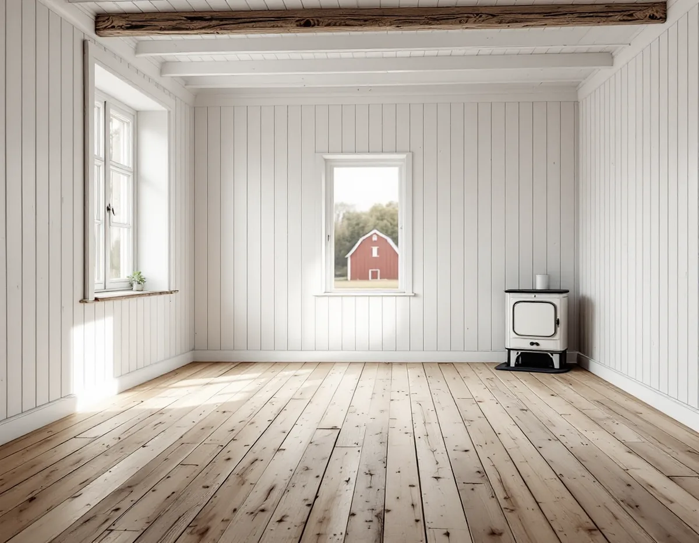
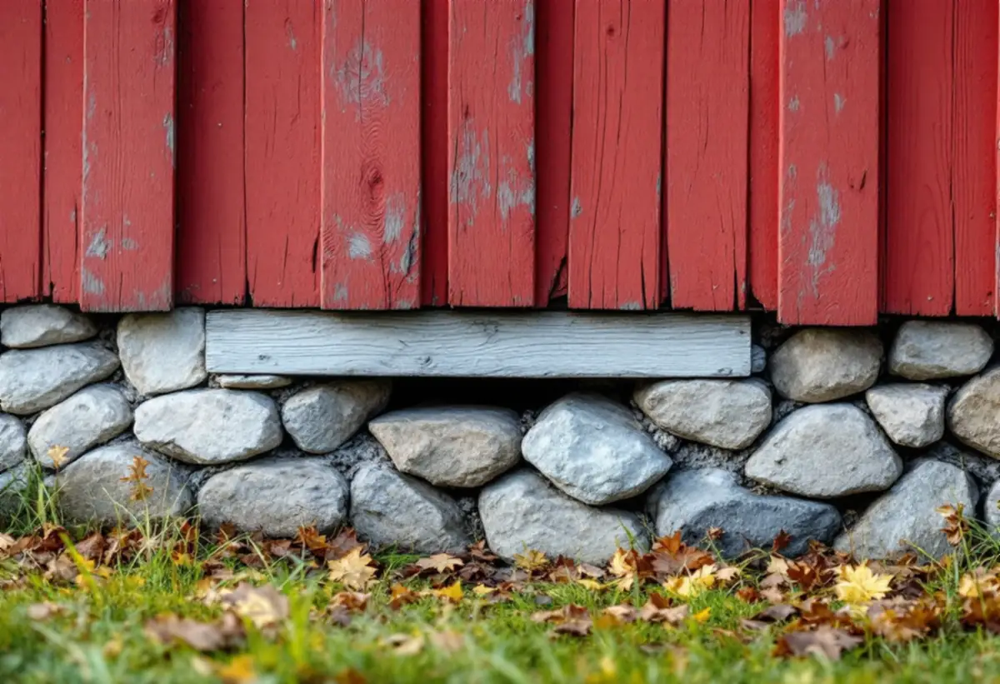

Besök
Vi går igenom rummen, tittar under en matta och, om det går, in i grunden under huset.
I Roslagen står många gamla gårdar kvar, och i dem ligger ofta golv av breda plank på en grund som byggdes för ett hus som eldades varje dag. Golven går ofta att rädda, men de kräver en annan behandling än golvet i en modern villa. Geal Entreprenad AB slipar, lagar och lägger golv i hela Norrtälje kommun, med gratis platsbesök och skriftligt kostnadsförslag.

Norrtälje kommun har 19 110 bostäder i småhus enligt SCB:s siffror för 2024, och 26 riksintresseområden för kulturmiljövården. I kommunens kulturmiljöutredning om Arholma från 2016 beskrivs redargårdarna som typiska för Roslagen. Det var större bondgårdar vars ägare också drev rederi, och de tog form under 1800-talet när sjöfarten blev mer storskalig.
Utredningen berättar att flera parstugor byggdes på till två våningar under 1800-talet, när sjöfarten var som mest lönsam. Redargårdarnas huvudbyggnader har ofta timmerstomme inklädd med panel, och interiören inreddes enligt tidens ideal med påkostade paradrum. Mot slutet av 1800-talet kom sommargästerna, och flera gårdar blev pensionat. Ett hus med den historien kan ha golv från flera olika perioder i olika rum.

Boverket beskriver den gamla torpargrunden som en grundmur av sten med bärande stenblock som bjälklaget vilade på, och med ventilationsöppningar i muren. På vintern isolerades grundmuren med snö och granris, så att ventilationen minskade och marken under huset inte kyldes ner så mycket.
Huset värmdes med ved, och murstocken i grunden hölls varm hela året. Isoleringen i bjälklaget var tunn, så värme från rummen gick ner i grunden, och fukt från marken kunde vandra upp genom det otäta golvet. Tillsammans gjorde det att grunden fungerade förhållandevis väl ur fuktsynpunkt. Boverket påpekar samtidigt att torpargrunder inte är fria från skador – röta och besvärande lukt förekommer – och att de är betydligt sämre för energi och komfort än en modern krypgrund.
Boverket listar flera förändringar som har gjort gamla grunder fuktigare. När vedeldningen byttes mot till exempel direktverkande el slutade murstocken värma grunden, skorstensverkan minskade och grunden blev kallare och fuktigare. Tilläggsisolering mellan golvbjälkarna minskade värmen nedåt och gav högre luftfuktighet i grunden.
En förändring rör golvet direkt: en ång- och lufttät golvmatta på golvplanken. Då kunde fukt inte längre torka ut genom bjälklaget, och fuktnivån i grunden ökade. Därför lägger vi inte en tät matta eller ett tätt golv på ett gammalt plankgolv utan att först ha tittat under huset. Ibland är det bättre att slipa fram planken och behandla dem med olja eller såpa än att täcka dem.
Golvbranschen skriver att ett massivt trägolv kan renoveras genom omslipning många gånger, så länge det finns en godtagbar tjocklek kvar mellan ytan och not och spår. I gamla plankgolv är planken ofta tjocka, men de kan ha slipats förut och slitits olika mycket. Vi mäter och provslipar en mindre yta innan hela rummet tas.
Branschen påpekar också att trägolv krymper och sväller med luftens fuktighet och trivs bäst vid 15–25 grader och 30–60 procent relativ fuktighet. I ett hus som inte värms hela året blir växlingarna större, och springorna mellan planken öppnar och stänger sig med årstiderna. Det är något att räkna med, inte ett fel som går att slipa bort. Mer om slipning och ytbehandling finns på sidan om golvläggning.
Norrtälje kommun skriver att radon från marken är den vanligaste källan till radon i byggnader och att gasen tar sig in genom sprickor och andra otätheter i grundkonstruktionen. Det enda sättet att veta halten är att mäta, och resultatet av en mätning av inomhusluften ska skickas till kommunens bygg- och miljönämnd.
Mätningen ska pågå i minst två, helst tre månader under eldningssäsongen, oktober till april. Ska golvet i ett äldre hus göras om och grunden ändå ses över är det ett bra tillfälle att planera en mätning. Ska även taket på gården ses över finns mer på sidan om takbyte i Norrtälje.
Vi går igenom rummen, tittar under en matta och, om det går, in i grunden under huset.
Vi mäter hur mycket trä som finns kvar och ser efter fukt, röta och lukt.
Du får ett skriftligt kostnadsförslag där slipning, lagning och nytt golv är egna alternativ.
Material beställs i god tid så att arbetet kan göras i ett sammanhang, även långt från stan.
Plank lagas, golvet slipas i flera steg eller ett nytt golv läggs på ett kontrollerat underlag.
Olja, såpa eller lack väljs efter hur huset används och värms under året.
Slipning och byte av golv räknas som rotarbete enligt Skatteverket, både i permanentbostaden och i ett fritidshus som du äger och använder. Avdraget är 30 procent av arbetskostnaden, högst 50 000 kr per person och år, inom ett gemensamt tak på 75 000 kr för rot och rut.
Material och resekostnader ger inget avdrag. Geal gör avdraget direkt på fakturan.
Golvets skick, hur många plank som behöver lagas eller bytas och om grunden behöver åtgärdas först avgör mest. Avståndet till huset och om det ligger på en ö påverkar också. Platsbesöket är gratis och du får ett skriftligt kostnadsförslag.
Parkett, trägolv, klinker och slipning.
Golvläggning i Stockholm →Takbyte, takbesiktning och plåtarbeten.
Takläggare i Norrtälje →Roslagen, skärgård och fritidshus.
Takrenovering i Norrtälje →Fritidshus, WC-tillstånd och brunn.
Badrumsrenovering i Norrtälje →Nytt hus, förhandsbesked och egen brunn.
Byggföretag i Norrtälje →Bruksvillor, sommarvillor och Roslagens trähus.
Fasadrenovering i Norrtälje →Roslagens hus, bruksorter och bidrag i Norrtälje.
Fönsterbyte i Norrtälje →Gasolspis, vedspis och pentry i gäststugan.
Köksrenovering i Norrtälje →Trähus, fritidshus och kustlägen i Norrtälje.
Målare i Norrtälje →Takskydd, rännor och skorstensplåt i Norrtälje.
Plåtslagare i Norrtälje →Fritidshus, altan och gäststuga.
Snickare i Norrtälje →Kust, snö och Roslagens tak.
Takbyte i Norrtälje →